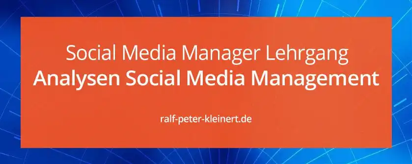

Bestands-Analyse Software für Social Media Management
Analysen für Social Media
Einleitung SMM Software
Wir sind nun bei der Bestands-Analyse für Software angelangt und beleuchten den Computer und dessen Software. Und weil sich meine Website an den werdenden Social Media Manager wendet, versuche ich möglichst die Kosten im Blick zu behalten, die ein solcher Arbeitsplatz nach sich zieht. Ich beziehe mich auf Microsoft Windows Computer und die zugehörigen Programme, auf Google Android Handys und Tablets für die gesamte Erstellung der Produkte im Digital-Marketing sowie das SM-Management.
Tipp
Im Artikel findest du einige Download-Links zum herunterladen der Programme die im Social-Media-Management benötigt werden. Die meisten der Programme sind kostenlos.
In vielen Werbe- und SM-Agenturen werden Computer, Handys, Tablets und Software von Apple genutzt. Mac, MacBook, iPhone, iPad, Mac-OS und I-OS sind hier einige Stichworte. Da diese Produkte aus dem Hause Apple aber unfassbar kostspielig und teuer sind, kann von einem angehenden SMM nicht erwartet werden diese anzuschaffen. Die wichtigsten Programme wie Browser oder Photoshop laufen auf beiden Plattformen. Das Argument, dass Apple Digital-Produkte wie Grafiken oder Videos besser sind als die Kollegen aus einem Windows-System weise ich entschieden zurück. Ich arbeite mit beiden Systemen aber habe Windows ganz klar als Favoriten.
Die Vorteile von Windows-PCs
Diese Website ist auf Windows ausgerichtet - nicht auf Apple. Der wichtigste Punkt war hierbei die Kostenfrage.
- Microsoft-Windows ist ungeschlagener Marktführer
- Windows-Systeme kosten nur einen Bruchteil
- Für Windows-PCs gibt es sehr viel mehr Software
- Der PC lässt sich problemslos Aufrüsten und Erweitern
- Das Aufrüsten ist kostengünstig
- Die meisten Hardware-Hersteller produzieren für Windows
- Die meisten Software-Hersteller produzieren für Windows
- Windows-PCs sind bis ins Detail standardisiert
- Die Digital-Produkte stehen Apple in nichts nach
- Die Anschaffungs-, Gesamt- sowie die laufenden Kosten sind sehr viel geringer
- Die Sicherheit ist gleich auf
- Die Kompalibilität zu anderen Systemen ist sehr viel höher
- Es stehen die selben oder gleichwertige Software-Tools zur Verfügung
- Es stehen sehr viel mehr Profi-Bildschirme zur Auswahl
Ich habe hier ein ganz kurzes Video rausgesucht, in welchem die Vor- und Nachteile von Apples Mac aufgezeigt werden. Als größter Vorteil wird das schicke Gehäuse genannt, na ja ich weiß nicht ob das so wichtig ist in der Medien-Produktion. Ich persönlich sehe keinen Grund, den PC gegen einen Mac zu tauschen, denn die Nachteile überwiegen. Es geht um gutes Social-MM, Top Digital-Produkte und nicht darum den schicksten Rechner zu haben.
Du kannst also am Windows-PC genauso gute Produkte erstellen wie an einem Mac. Kommst du allerdings in eine Agentur, in der nur mit Apple gearbeitet wird, kannst du dich schnell einarbeiten. Kommst du aber von der Schule, oder hast nicht viel Geld locker, geht es dir wie den meisten Menschen. Mit Windows triffst du eine gute Wahl, meiner Meinung nach die beste Wahl. Denn Apple-Produkte sind Prestige-, Fan- und Liebhaber-Produkte aber keineswegs die besseren Computer oder Handys.
Die Software-Grundausstattung des Social Media Management PCs
Gehen wir davon aus, du hast dir einen leistungsstarken PC gekauft, der keine Software dabei hat. Hier zähle ich dir die wichtigsten Programme auf, die der PC benötigt, um zu laufen und um im SMM zu arbeiten. Ich achte auch sehr darauf, dass die Programme möglist kostenfrei bzw. günstig sind und dass sie aus vertrauenswürdigen und sicheren Quellen kommen.
Diese Software ist für den Betrieb zwingend Notwendig:
Betriebssystem Windows 10
Betriebssystem Windows 11
Dein Rechner braucht ab 2025 das Betriebssystem Windows 11 und wenn du dieses kaufen musst, kommst du an einen gewissen Preis nicht vorbei. Hüte dich vor Win11 Lizenzen die 17,95 € kosten. Kaufe nur bei Microsoft selbst das Betriebssystem, so ist sicher gestellt, dass du die neueste Version bekommst und auch niemandem auf dem Leim gehst. Du könntest es sonst bereuen, wenn Microsoft dir eine illegale Version während eines wichtigen Jobs abschaltet. Investiere hier und entscheide dich für Win11 Professional direkt von Microsoft*Internet-Browser
Besonders im SMM wirst du mit einem einzigen Browser nicht zurecht kommen. Manchmal müssen vom selben Netzwerk verschiedene Konten aktiv sein und manchmal müssen Landingpages oder Webseiten auf verschiedenen Browsern getestet werden. Es gibt einige Gründe sich EDGE, FireFox, Opera und Google-Chrome parallel zu installieren. Alle Browser haben kleine Unterschiede und deine Produkte sollten möglichst überall gleich aussehen. Google-Chrome ist durch die Verbindung mit Goolge perfekt geeignet um als Hauptbrowser zu fungieren. Goolge ist die größte und beliebteste Suchmaschine der Welt - du wirst Google brauchen.Diese Software sollte unbedingt vorhanden sein:
Antiviren-Software
Windows 10 hat den Defender an Board. Der Funktioniert auch ganz zuverlässig. Dennoch empfehle ich dir die kostenlose Version von Avira Free Security bei Chip zu laden, und zu verwenden.
Passwort-Manager
Ich rate dringend davon ab, die Passwörter deiner Profile, Accounts oder die der Kunden in einem Browser zu speichern. Browser legen Passworte oft in der Cloud ab, um sie auf verschiedenen Geräten verfügbar zu machen. Sind Browser nicht in der Cloud angemeldet können dennoch Facebook-Konten oder andere Profile über den Browser geöffnet werden, sollte jemand Zugriff auf den Rechner haben. Z.B durch Diebstahl. Es gibt Tools mit denen das Windows-Passwort ausgehebelt werden kann.Mache es Dieben oder Betrügern so schwer es nur geht. Nutze den kostenlosen Passwort-Manager KeePass. Du kannst dort wunderbar unendlich viele Konten und Passwörter speichern, die verschlüsselt abgelegt werden.
Office-Software
Da Microsoft-Office oder Microsoft-365 Geld kosten schlage ich dir das kostenlose Büro-Paket Libre-Office vor. Libre Office erledigt alle Aufgaben die im Büro anfallen sicher und zuverlässig. Außerdem ist die Software Microsoft-Kompatibel. Du kannst also auch Word Dokumente öffnen oder mit Libre erstellen.Bildbearbeitungs-Software
Ich selbst arbeite mit Adobe Photoshop. Da PS aber wirklich ins Geld gehen kann empfehle ich dir GIMP. GIMP ist kostenlos und du kannst alles damit machen um Grafiken für das Social Media Marketing zu erstellen. Es gibt auch unzählige GIMP-Tutorials auf YouTube.Videoschnitt-Software
Bei der Videoschnitt-Software empfehle ich dir Magix-Video Deluxe*. Das Programm ist nicht kostenlos aber für den Einsteiger oder Anfänger bestens geeignet. Magix bietet dir aber eine kostenlose Testversion an. Das kostenlose Tool DavinciResolve wäre viel zu kompliziert und du wirst ewig Zeit brauchen um ordentliche Ergebnisse zu erzielen. Adobe Premiere ist viel zu teuer. Mit Magix kannst du dich auf das Wichtige kozentrieren. Auf Social Media Management.
Datenrettungs-Software
Es kann immer einmal passieren, dass du versehentlich Daten löschst, oder auch ein Laufwerksfehler vorliegt. Das geht sogar schneller als einem manchmal lieb ist. Ein Datenrettungstool zu haben ist dann wirklich sehr hilfreich. Hier empfehle ich dir das kostenlose Tool TestDisk-PhotoRec, das du bei Chip herunterladen kannst. Backup-SoftwareNichts ist schlimmer als eine Festplatte die, oder ein ganzer Rechner der abraucht. Eine ordentliche Backup-Lösung muss dringend her und zwar bevor der Rechner mit deinen Digital-Produkten, deinem Passwort-Manager oder deinen Kundendaten den Geist aufgibt! Hole dir unbedingt ein zuverlässiges Tool. Ich spreche aus trauriger Erfahrung, und eine solche Erfahrung, wird einen bis zum Ende immer begleiten. Paragon Backup und Recovery macht deinen Rechner sicher. Das Tool macht koplette Spiegelungen sogar vom Windows-Laufwerk. Festplatte austauschen und das Image zurückspielen. Alles wieder schick. Ohne Paragon? Wenn es soweit ist, was niemand hofft, wirst du schon die Reue spüren, ganz gewaltig. Glaube mir.
Es gibt noch unzählige, weitere Software-Spielereien die man gut im Social-Media-Marketing verwenden kann. Das waren aber die wichtigsten Programme, die unbedingt benötigt werden.
#SMKlarBAS = SocialMediaKlar Bestands Analyse Software
Aktualisiert: Ralf-Peter Kleinert 07.05.2024
Über den Autor: Ralf-Peter Kleinert
Über 25 Jahre Erfahrung in der IT legen meinen Fokus auf die Computer- und IT-Sicherheit. Auf meiner Website biete ich detaillierte Informationen zu aktuellen IT-Themen. Mein Ziel ist es, komplexe Konzepte verständlich zu vermitteln und meine Leser für die Herausforderungen und Lösungen in der IT-Sicherheit zu sensibilisieren.
Mehr über mich, Ausbildung, Zertifizierungen ...